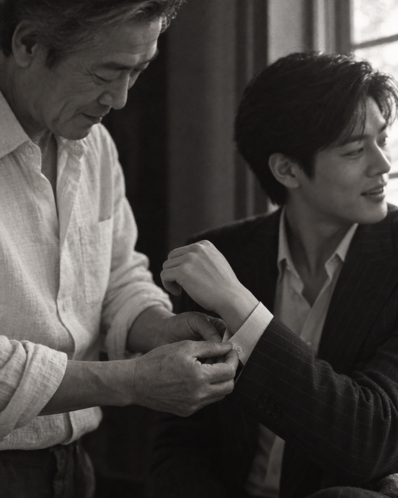

002 RL Purple / S3
15:00 · BLACK AND WHITE CLOSE DETAIL
Sleeve
아버지가 아들의 소매 단추를 채우는 작은 돌봄. 캠페인의 계승을 물건 대신 행동으로 보여줍니다.


현재 판정 · 선정 가능. 다음 수정은 중립 흑백, 거친 Tri-X 입자, 손에만 초점을 두고 두 얼굴을 약간 흐리는 수준으로 제한합니다.
| 사양 | 현재 결과 | 판정 |
|---|---|---|
| 손 중심 초점 | 손과 얼굴 모두 비교적 선명 | 미세 수정 |
| 중립 흑백 | 약한 세피아 경향 | 톤 수정 |
| 자연스러운 접촉 | 소매와 손가락 관계 양호 | 유지 |